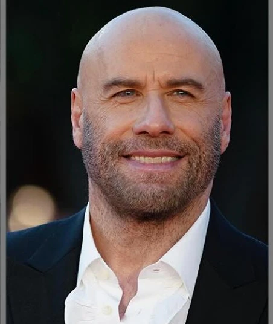
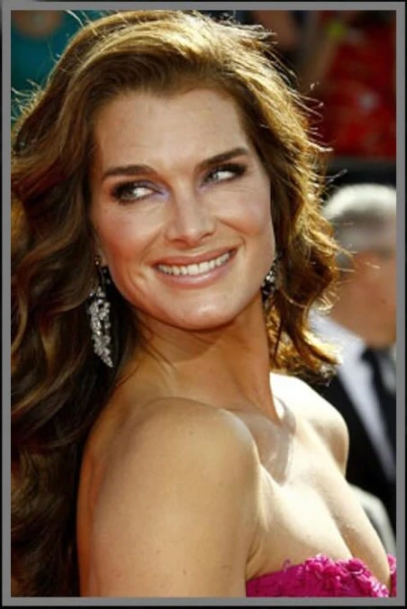
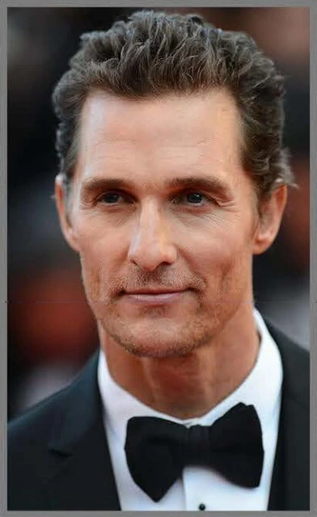
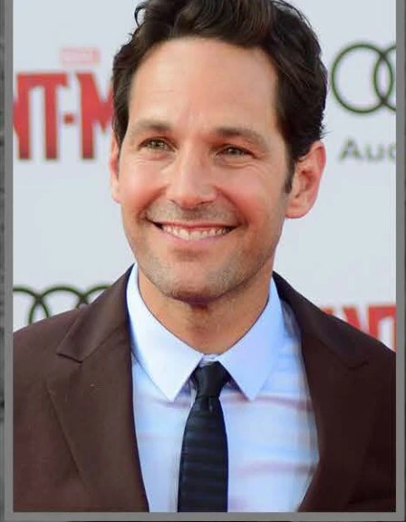
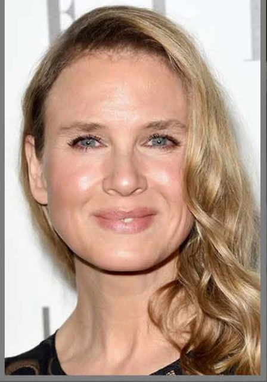
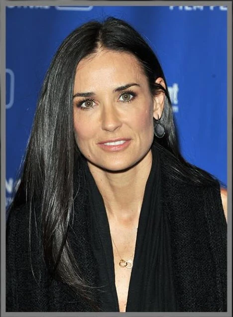
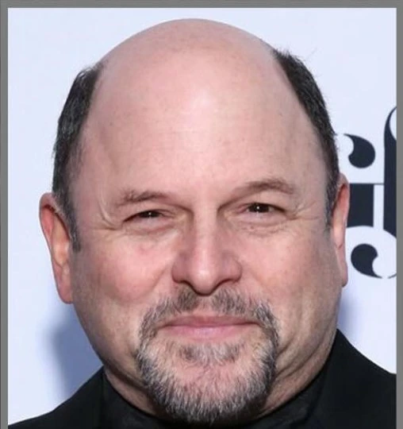
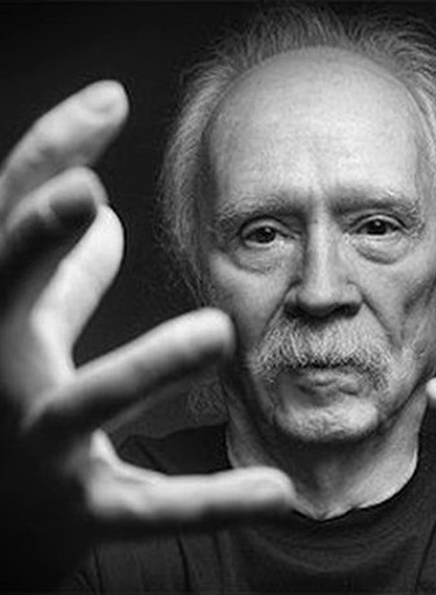
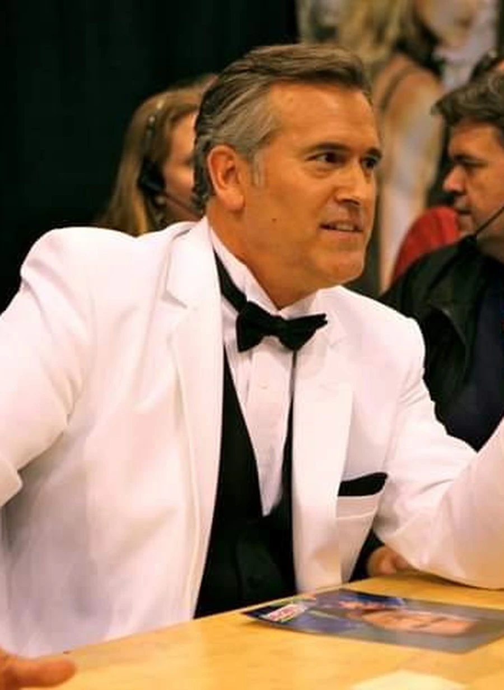
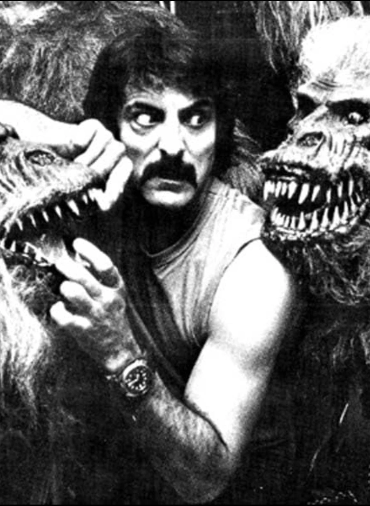

03 — Stars
Stars
Careers that began with a horror credit. Actors, a director, a makeup artist. The name came after the credit, or the credit was the name.
01
Jamie Lee Curtis
Halloween (1978)
Before True Lies, Freaky Friday, and her Academy Award for Everything Everywhere All at Once, Jamie Lee Curtis made her feature debut as Laurie Strode in John Carpenter’s Halloween.

02
John Travolta
Carrie (1976)
Before Saturday Night Fever, Grease, and Pulp Fiction, John Travolta made one of his first feature appearances as Billy Nolan in Brian De Palma’s Carrie.

03
Brooke Shields
Alice, Sweet Alice (1976)
Before The Blue Lagoon and Endless Love, Brooke Shields appeared in Alfred Sole’s Alice, Sweet Alice, also released as Communion.

04
Matthew McConaughey
Texas Chainsaw Massacre: The Next Generation (1994)
Before Interstellar, and his Academy Award winning role portraying Ron Woodroof in Dallas Buyers Club, Matthew McConaughey starred in Texas Chainsaw Massacre: The Next Generation.

05
Paul Rudd
Halloween: The Curse of Michael Myers (1995)
Before I Love You, Man and Ant-Man, Paul Rudd played Tommy Doyle in Halloween: The Curse of Michael Myers.

06
Renée Zellweger
Texas Chainsaw Massacre: The Next Generation (1994)
Before Jerry Maguire, Bridget Jones’s Diary, an Academy Award nomination for Chicago, Cold Mountain, and her Academy Award for Judy, Renée Zellweger starred alongside Matthew McConaughey in Texas Chainsaw Massacre: The Next Generation.
07
Elizabeth Olsen
Silent House (2011)
Before Wanda Maximoff, Elizabeth Olsen starred in Silent House.

08
Demi Moore
Parasite (1982)
Before Ghost, Indecent Proposal, and G.I. Jane, Demi Moore starred in Parasite — Charles Band’s 1982 science-fiction horror film, not the later, unrelated feature of the same name.

09
Jason Alexander
The Burning (1981)
Before George Costanza on Seinfeld, Jason Alexander appeared in The Burning.

10
John Carpenter
Halloween (1978)
John Carpenter directed Halloween, The Thing, and They Live, and scored them himself. He returned for Halloween (2018), Halloween Kills, and Halloween Ends as executive producer and composer.

11
Bruce Campbell
The Evil Dead (1981)
Bruce Campbell played Ash Williams in The Evil Dead, Evil Dead II, and Army of Darkness.

12
Tom Savini
Dawn of the Dead (1978)
Tom Savini designed the effects for Dawn of the Dead, Friday the 13th, and Creepshow, and played among the creatures he built.
13
Johnny Depp
A Nightmare on Elm Street (1984)
Before Edward Scissorhands and Pirates of the Caribbean, Johnny Depp made his feature debut as Glen Lantz in A Nightmare on Elm Street.